排序能量发生器
Problem statement
将热电厂的主流温度保持在或接近给定设定值的公差范围内。
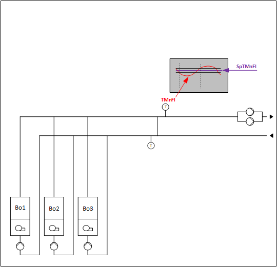
Which components are necessary?
0：电站运行模式确定逻辑
1：设定点确定以及“向上”和“向下”请求更多或更少功率的逻辑
2：功率控制和补偿逻辑
3：轮廓确定逻辑
4：每个能源生产商（例如锅炉）的控制逻辑
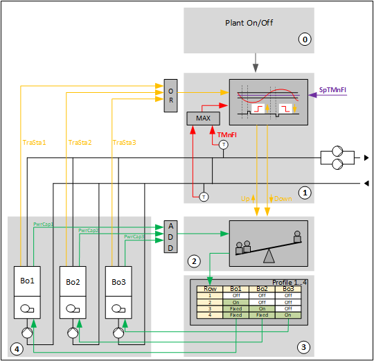
0: Logic for plant operating mode determination
它包括用于关闭设备和以下不同条件的逻辑：
- Heating request (optional)
- Different optional fault signals
- Plant manual operation (optional)
- Response to a storage tank charge request (optional)
1: Logic for setpoint determination and "Up" and "Down" requests for more or less power
确定主流温度的当前设定点并评估主流温度是否在设定点附近的公差范围内的逻辑。如果主流温度不在设定点附近的容差范围内，则它会向发电机请求更多（向上）或更少（向下）的功率。
2: Logic for power control and compensation
它通过请求配置文件表中的更高或更低的行（或多行）来响应“向上”和“向下”，直到检测到功率容量增加或减少。它可以自动补偿电力不足，例如能源生产商的故障。
3: Logic for profile determination
它包括配置文件表 (SELP8_MS) 和在不同配置文件之间切换的逻辑，例如，能源生产商的轮换几乎均等地分配其运行时间。
4: Logic for control for every energy producer, e.g, boiler
它包括与能源生产商自身控制的接口，并控制其外围设备，例如泵、截止阀。
工厂结构示例 (HGen24x)：
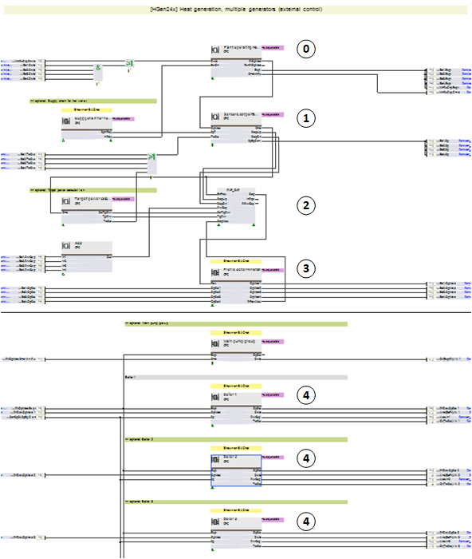
0: Logic for plant operating mode determination (details)
您可以通过 2 种方式设置对储罐充电请求的响应：
1. 储罐充电请求独立于热量请求打开或关闭工厂电源控制。
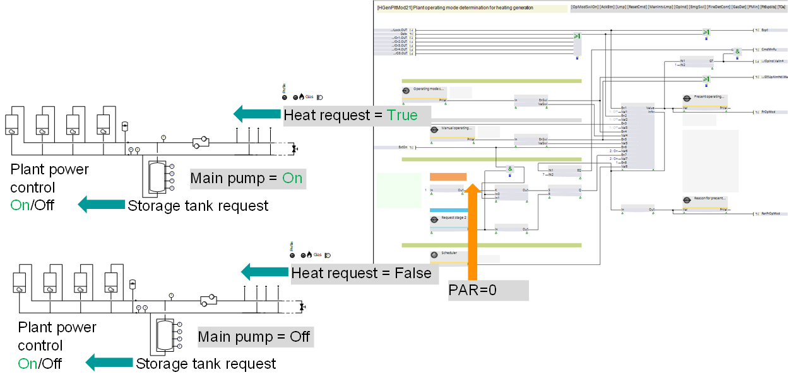
2. 仅当存在热量请求时，储罐充电请求才会打开或关闭工厂电源控制。
*如果工厂正在运行并且热量需求消失，工厂将继续运行，直到储罐充满为止。
1: Logic for setpoint determination and "Up" and "Down" requests for more or less power
它包括：
- Logic for setpoint determination
- Logic that evaluates if the main flow temperature is within the tolerance around the setpoint. If not, it requests more (Up) or less (Down) power from the power generators.
- Hot water storage tank
- Logic (optional) that generates an independent signal for less power (Down) when the difference between the main flow temperature and the main return temperature becomes too small.
- Logic (optional) that generates a relative signal (0-100 %) that is read by the energy producers and locally increases their setpoints, e.g., by 0...3 K, if they are in "Fixed" mode. The aim is to fix them and leave only one generator that is "On" to perform the modulation.
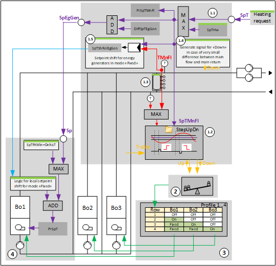
Logic for setpoint determination
有两种情况：
案例一：热水协调有逻辑。输入引脚 [SpT] 读取“设定点加热请求”。在这种情况下，可选的 [SpTHw] 将被删除。
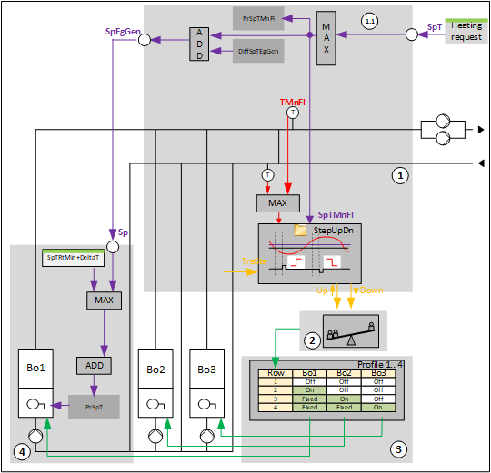
情况 2：输入引脚 [SpT] 没有读取到“设定点加热请求”。在这种情况下，保留可选的 [SpTHw]。
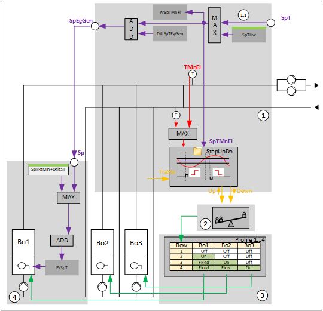
Logic to request more or less power
评估主流温度是否在设定点附近的容差范围内的逻辑。如果不是，它会向发电机请求更多（向上）或更少（向下）的功率。
有3种选择：
1. 程序块StepUpDn21：
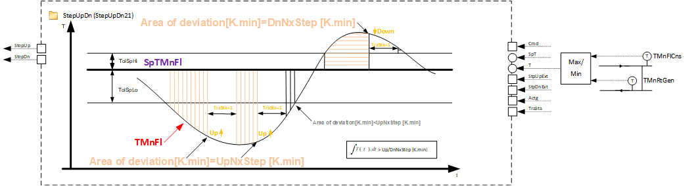
2. 程序块StepUpDn22：
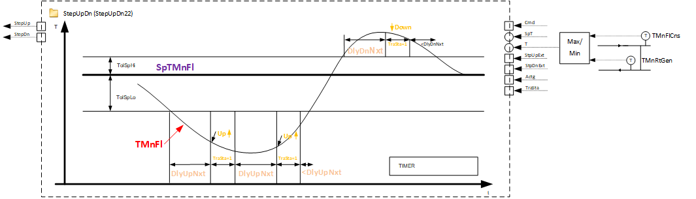
3. 程序块StepUpDn23：
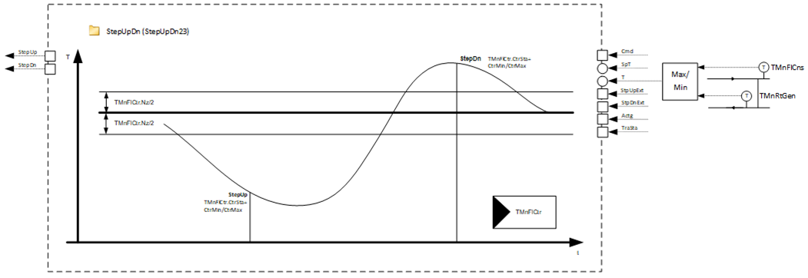
2: Logic for power control and compensation (function block PWR_CMP)
它通过请求配置文件表中的更高或更低的行（或多行）来响应“向上”和“向下”，直到检测到功率容量增加或减少。它可以自动补偿电力不足（例如，能源生产商的故障）、电力过剩，或达到给定的目标电力。
您可以调整两个隐藏的销钉。
- Enable compensation for lack of power
- Enable compensation for excess of power
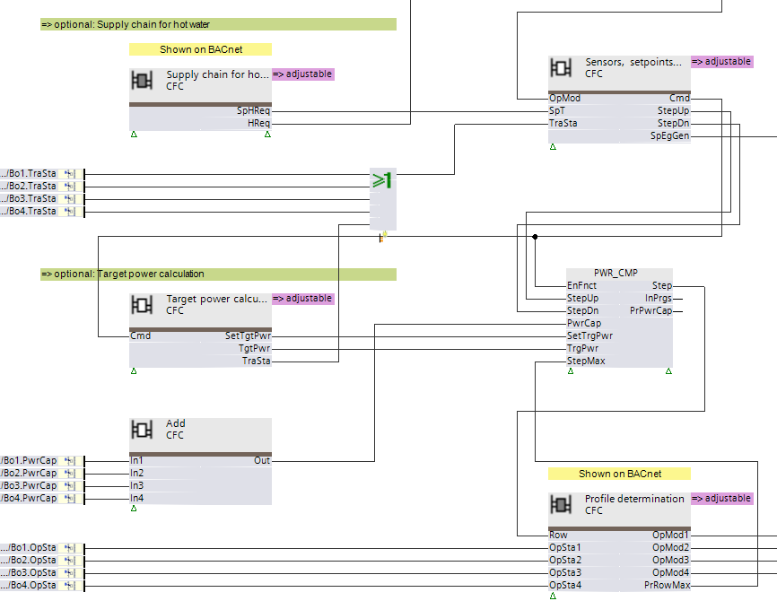
Logic for power control and compensation: Power increase
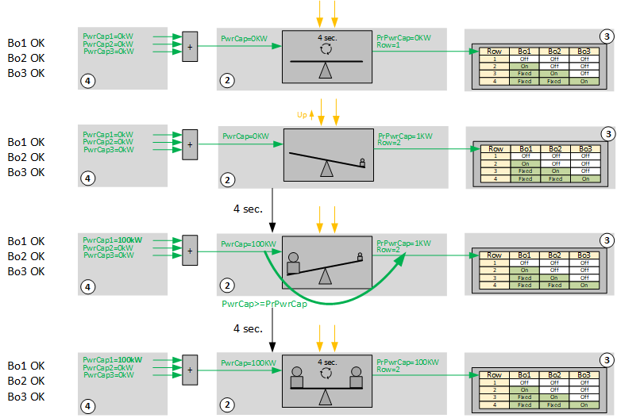 |
工厂关闭了。 PrPwrCap = 0 KW = PwrCap。天平处于平衡状态。每四秒逻辑就会将 PrPwrCap 与 PwrCap 进行比较。 |
StepUp = 1。PrPwrCap 人为增加 1 KW，并与 PwrCap = 0 KW 进行比较。天平失去平衡。这必须得到补偿。该逻辑执行一个步骤并请求配置文件表中更高的行。 | |
执行升压后，PwrCap = 100 KW > PrPwrCap = 1 KW。天平再次失去平衡，但这一次不平衡是朝着期望的方向发展的。逻辑通过将 PwrCap 写入 PrPwrCap 来记忆它。 | |
天平处于平衡状态。 PwrCap = 100 K = PrPwrCap。每四秒逻辑就会将 PrPwrCap 与 PwrCap 进行比较。 |
Logic for power control and compensation: Power increase
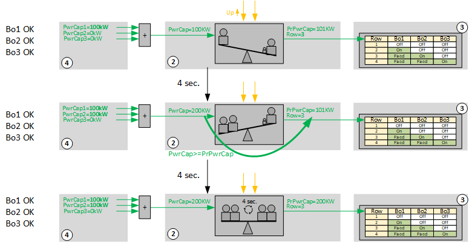 |
StepUp = 1。PrPwrCap 人为增加 1 KW 至 101 KW，并与 PwrCap = 100 KW 进行比较。天平失去平衡。这必须得到补偿，并且逻辑执行一个步骤并从配置文件表中请求更高的行。 |
执行升压后，PwrCap = 200 KW > PrPwrCap = 101 KW。天平再次失去平衡，但这一次不平衡是朝着期望的方向发展的。逻辑通过将 PwrCap 写入 PrPwrCap 来记忆它。 | |
天平处于平衡状态。 PwrCap = 100 K = PrPwrCap。每四秒逻辑就会将 PrPwrCap 与 PwrCap 进行比较。 |
Logic for power control and compensation: Power increase with one generator out of order
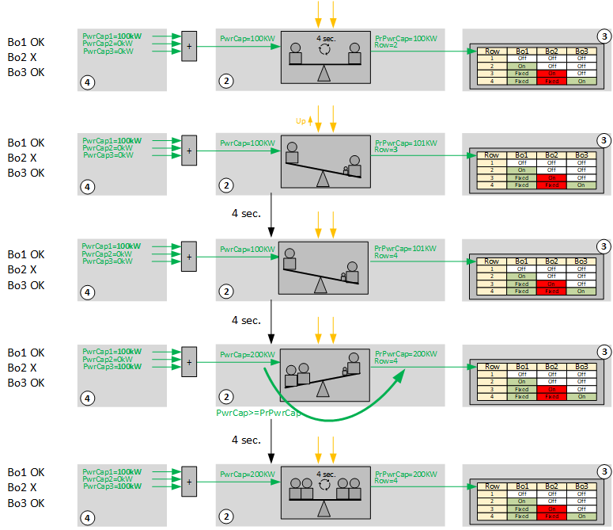 |
工厂已启动。 PrPwrCap = 100 KW = PwrCap。天平处于平衡状态。每四秒逻辑就会将 PrPwrCap 与 PwrCap 进行比较。 |
StepUp = 1。PrPwrCap 人为增加 1 KW 至 101 KW，并与 PwrCap = 100 KW 进行比较。天平失去平衡。这必须得到补偿，并且逻辑执行一个步骤并从配置文件表中请求更高的行。不幸的是，Bo2 出现故障并关闭。 | |
执行该步骤后，PwrCap 保持不变，为 100 KW < PrPwrCap = 101 KW。天平仍然不平衡。四秒后，逻辑执行另一个步骤，并再次从配置文件表中请求更高的行。 | |
执行该步骤后，PwrCap = 200 KW > PrPwrCap = 101 KW。天平再次失去平衡，但这一次不平衡是朝着期望的方向发展的。逻辑通过将 PwrCap 写入 PrPwrCap 来记忆它。 | |
天平处于平衡状态。 PwrCap = 100 K = PrPwrCap。每四秒逻辑就会将 PrPwrCap 与 PwrCap 进行比较。 |
Logic for power control and compensation: Automatic compensation for lack of power
EnCmpLack = 1
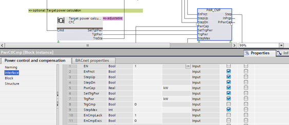
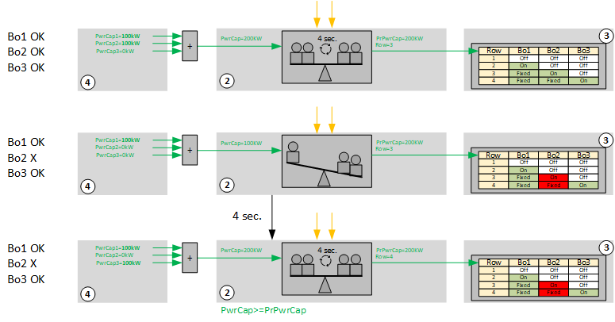 |
工厂已启动。 PrPwrCap = 200 KW = PwrCap。天平处于平衡状态。每四秒逻辑就会将 PrPwrCap 与 PwrCap 进行比较。 |
Bo2 出现问题。 PwrCap 从 200 KW 下降到 100 KW。天平失去平衡。这必须得到补偿，并且逻辑执行一个步骤并从配置文件表中请求更高的行。 | |
执行该步骤后，PwrCap 恢复并再次为 200 KW = PrPwrCap。天平再次达到平衡。 PwrCap = 100 K = PrPwrCap。每四秒逻辑就会将 PrPwrCap 与 PwrCap 进行比较。 |
Logic for power control and compensation: Direct switching and controlling of a given target power
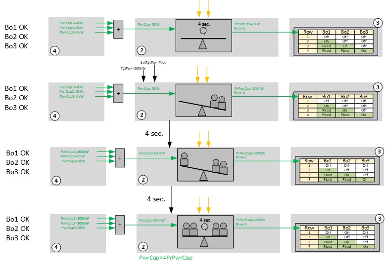 |
工厂关闭了。 PrPwrCap = 0 KW = PwrCap。天平处于平衡状态。每四秒逻辑就会将 PrPwrCap 与 PwrCap 进行比较。 |
请求的目标功率为 200 KW。 PrPwrCap 设置为 200 KW。天平失去平衡。这必须得到补偿，并且逻辑执行一个步骤并从配置文件表中请求更高的行。 | |
PwrCap = 100 KW < PrPwrCap = 200 KW。天平仍然不平衡。四秒后，逻辑执行另一个步骤，并再次从配置文件表中请求更高的行。 | |
执行该步骤后，PwrCap 达到 200 KW = PrPwrCap。天平再次达到平衡。每四秒逻辑就会将 PrPwrCap 与 PwrCap 进行比较。 |
3: Logic for profile determination
它包含配置文件表 (SELP8_MS) 和不同配置文件之间切换的逻辑：
- Manual switching
- Automated energy producer's rotation for nearly equal distribution of their operating hours (ROT_8)
热发生器的接通顺序在配置表中确定。您可以创建四个不同的配置文件。这些条目被输入到每个配置文件中，以便启用的热发生器或级的总功率随着行数的增加而增加。
如果启用了“功率控制和补偿”功能 [EnCmpLack]，则在发生故障时不需要更改配置文件。功率控制和补偿自动补偿缺失的功率。
配置文件表 SELP_8MS 可以通过其输出 [PrRowMax] 传输带有有效条目的最后一行。 “功率控制和补偿”在输入 [StepMax] 上接收该值并确定允许继续切换的行。
不同配置文件的更多示例：
示例：三个相同功率的调节热发生器顺序和并行控制
热发生器的可能阶段：Off、Min、On、Max
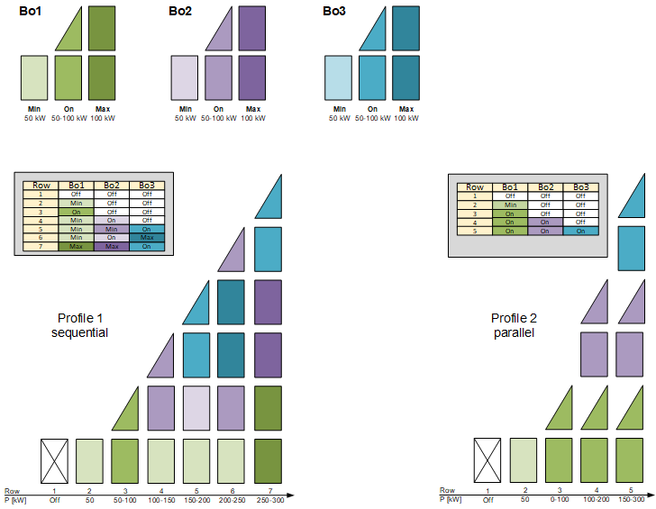
示例：三个单级热发生器
热发生器1用于夏季运行并根据需要使用。
热发生器 2 和 3 的功率均为热发生器 1 的两倍。
热发生器的可能阶段：关、开
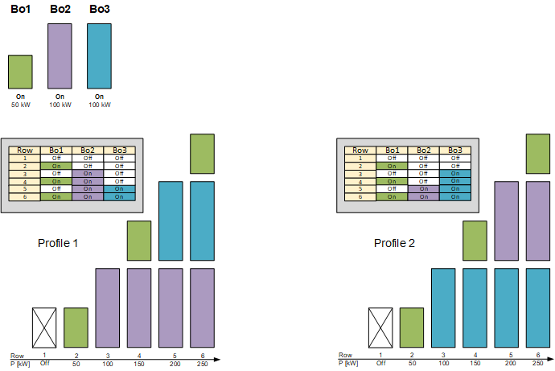
4: Logic for control for every energy producer, e.g., boiler
所有加热发生器均属于 HGen 系列（6 个锅炉、1 个热交换器和 2 个热泵）。
下图显示了您可以调整的值和元素：
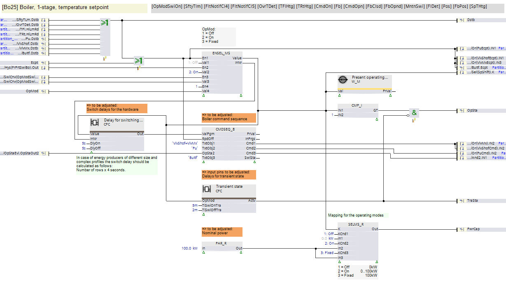
待调整：
- CMDSEQ_B: Sequence and timing for valves, pump, and control unit interface
- Time for TraSta = True after switching on and off
- Nominal power
- Switch-on and switch-off delay for the hardware (valves, pumps, and interface to the control unit)
Avoid unnecessary switch-on and switch-off when changing stages
增加配置文件表上的行数通常会增加功率。
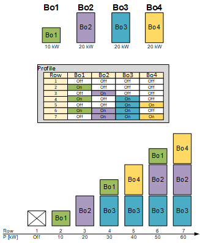
Bo1...4 = 锅炉 1...4
配置文件 = 配置文件表 SELP8__MS
然而，配置文件表中的行的变化可能不会带来期望的结果，例如，由于能量发生器上的故障。在这种情况下，能量发生器通过关闭延迟继续运行，直到在配置文件表中找到合适的行，即，直到信号[PwrCap]与请求的功率匹配。
Example 1: Boiler 2 (Bo2) in fault
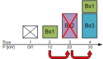
- Boiler 1 switches off if a signal "Step up" arrives during the operation of boiler 1. It changes from row 2 to row 3 in the profile table.
- Boiler 2 cannot be switched on due to a fault and [PwrCap2] reports that no power is available.
- As a result, power control and compensation continues to switch. In the profile table it changes from row 3 to row 4 and boiler 1 and 3 switch on. [PwrCap1] and [PwrCap3] report their power. The available power is now higher than the requested power.
在此工作流程中，锅炉 1 关闭，并在 4 秒的循环后重新打开。
为了防止短时关闭和开启，可以在锅炉上添加关闭延迟。当更改为第 3 行时，它会继续运行，并且当更改为第 4 行时，无需再次打开。
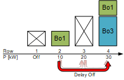
Example 2: Request for target power
热量产生由锅炉 2 运行，即剖面表中的第 3 行。输入 [SetTgtPwr] 的脉冲请求特定功率，例如 60 kW，现在在输入 [TgtPwr] 上请求。启动配置文件表中的步骤，直到输入 [PwrCap] 上的值大于或等于请求的功率。
如果没有设置延迟，则执行所有中间步骤，即在每个 4 秒的周期内打开和关闭相应的锅炉。
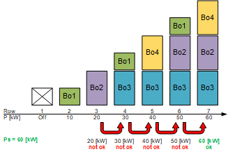
通过指定锅炉的关闭延迟可以避免打开和关闭（参见示例 1）。除了关闭延迟之外，还必须指定开启延迟，以便在尚未连续达到所请求的功率的情况下无法打开中间级。
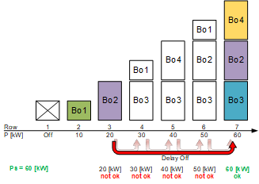
Example 3: Request for target power, fault boiler 3, no more fault on boiler 3
热量产生由锅炉 2 运行，即剖面表中的第 3 行。输入 [SetTgtPwr] 的脉冲请求特定功率，例如35 kW，现在根据输入 [TgtPwr] 请求。启动配置文件表中的步骤，直到输入 [PwrCap] 上的值大于或等于请求的功率。如果 3 号锅炉出现故障，第 7 排首先会出现这种情况。
如果没有设置延迟，则执行所有后续步骤，即锅炉在每个 4 秒的周期内打开和关闭。
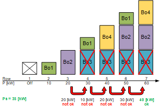
如果指定了开启和关闭延迟，则不会发生任何操作。锅炉 2 继续不间断运行，第 7 排的锅炉 4 也已开启。
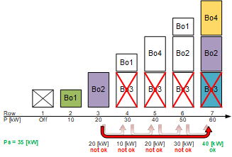
一旦锅炉 3 上的故障不再悬而未决，[PwrCap] 现在报告 60 kW，而不是 40 kW。
如果在超出 [EnCmpPwrExcs] 的情况下激活自动功率补偿，则会在配置文件表中逐步执行“降压”，直到报告的功率再次小于或等于内部存储器中最后保存的值。在本例中为 40 kW。
由于关闭延迟，锅炉 3 和 4 在到达第 5 行时不需要再次打开。锅炉 2 在关闭延迟结束后关闭。
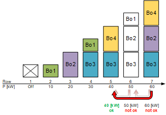
Calculating the switch-on and switch-off delay for the hardware
必须选择延迟时间，以允许以四秒的周期持续时间处理所有现有行。可以使用轮廓表的输出[PrRowMax]。它宣布最后一行包含有效条目。所需的延迟时间是以下结果：
([PrRowMax] – 2) * 4 秒 + 2 秒
解释：
[PrRowMax] – 2 = 有条目的所有行减去第一行和最后一行
*4 秒 = 循环持续时间为 4 秒的乘法
+2 秒 = 时间间隔，使延迟时间不在切换点，而是在周期中间。
换句话说，对于 [PrRowMax] = 7：
(7-2)*4+2 = 22 秒
计算出的延迟时间用于开启和关闭延迟。
Delayed switch-on and switch-off of stages for a change of stage on slow-acting systems
某些发电机，例如某些类型的制冷机，在启动时需要更多时间才能供电，例如，关闭风门打开，然后升至额定功率。必须设置其他发电机的关闭延迟，以尽可能缩短这些发电机的启动时间。因此，需要根据发电机的特性手动输入关闭延迟。
此外，接通和关断延迟必须至少足够大，以避免在能量发生器出现故障的情况下级的不必要的开关操作。延迟时间可以自动计算（参见前面的部分）。
示例：三个发电机的开启工作流程和关闭工作流程
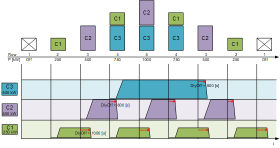
C1...3 = 能量发生器 1...3
DlyOff = 关闭延迟
未能设置关闭延迟会导致发电机切换期间功率出现剧烈波动：
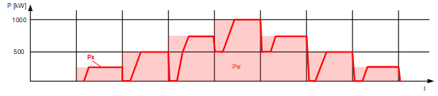
Pw = 请求功率（浅红色区域）
Px = 实际功率
通过设置关闭延迟，功率波动相应地显着减小：
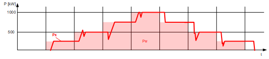
Pw = 请求功率（浅红色区域）
Px = 实际功率